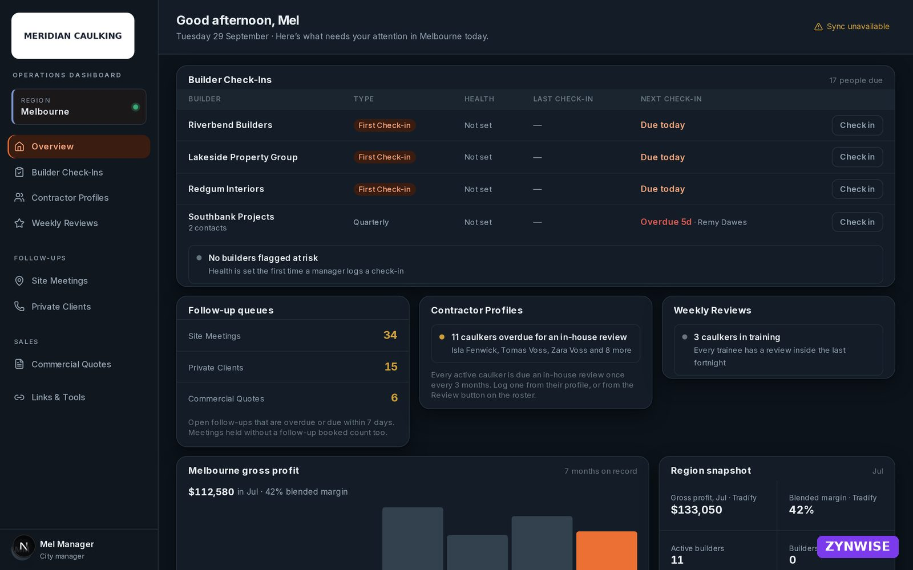
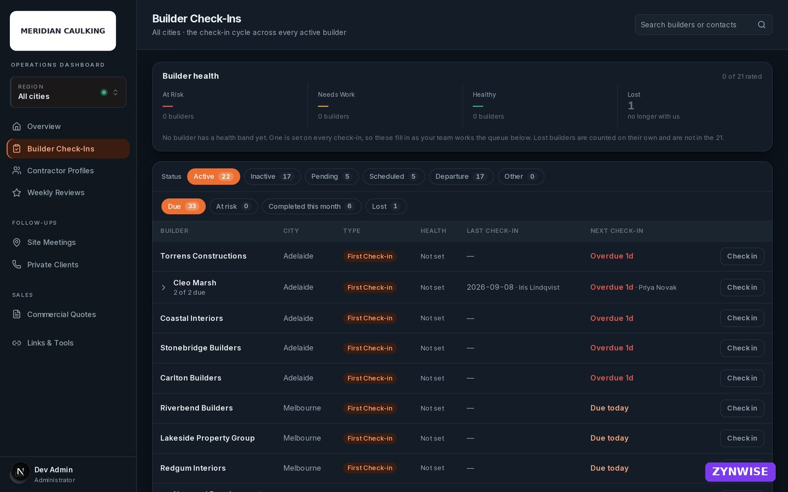
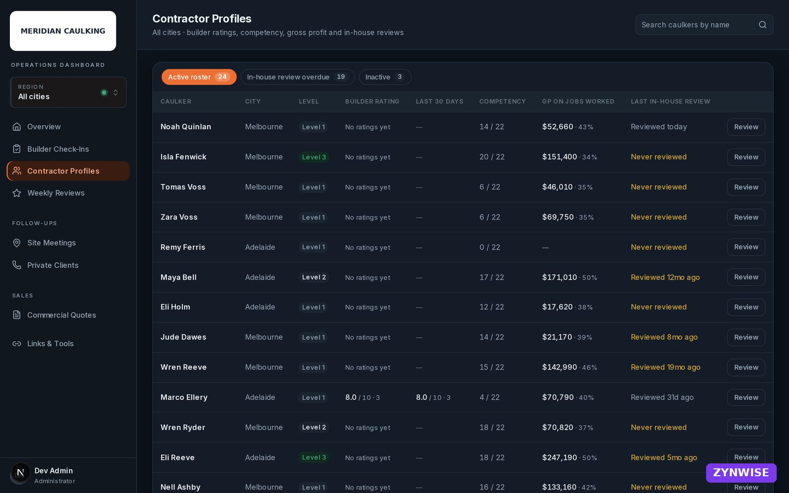
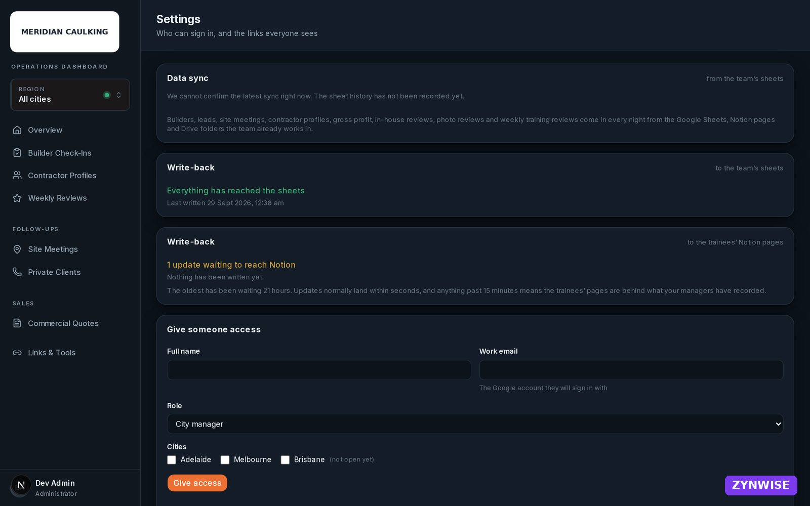

The systems I build, and what they did for the businesses that run on them.
A short walkthrough for hiring managers. One production application you can look through, six case studies in the same shape, every tool tied to the job it was used on, and how I work from the first call to handover.
Flagship · production web application
Operations dashboard for a multi-city trade business Delivered, in daily use
Three city managers were consolidating the business by hand every week across Tradify, Xero, Notion and Google Sheets. This replaced that with one system: builder check-in cycles, contractor profiles and gross profit, four sales queues, a nightly data sync with a plain-language troubleshooting panel, and access control enforced in the database so each manager sees only their city.
ⓘScreens below show the delivered application with sample data. Company and people names are fictional and figures are randomised. A clickable demo on a synthetic dataset is being prepared and will replace these screens at the same link.
Overview, administrator view. Everything a manager needs to act on today, across all cities: check-ins due, follow-up queues, review status and the month's gross profit from Tradify.

The same overview for a city manager. The scope is enforced by row-level security in Postgres, not hidden in the interface.

Builder check-in cycle: cadence and health thresholds are settings the client can change, not code.

Contractor profiles: competency sign-offs, gross profit on jobs worked, and in-house review cadence.

Settings: sync and write-back status written for a non-technical manager, and invitation-only access.
Stack: Next.js 16 App Router, TypeScript, Supabase (Postgres, Auth, Storage, RLS), Drizzle, Vercel (Sydney), Sentry, GitHub Actions for the nightly sync and test suite (1,200+ unit tests, Playwright end to end, an RLS suite against a seeded database). Handed over on client-owned infrastructure with training, a plain-English data explainer and runbooks.
Case studies
Six engagements, one shape
Client, problem, what was built, tools, outcome. Where a figure is an estimate or a projection it says so; measured results replace those at each project's close.
Managers rebuilt the state of the business by hand each week from four tools; the weekly finance report alone was an hour per state, the monthly report took two to five days, and data completeness was policed daily.
Built
The production application above, plus nightly import from the team's sheets and Notion, write-back of manager actions, and a sync panel that explains faults in plain language.
Next.jsSupabaseDrizzleVercelSentryGitHub ActionsGoogle Sheets APINotion API
About 10 hours a week of manager time recovered across three managers (estimate from the discovery calls; measured at project close).
Automation strategy report Delivered
Same client · operations, hiring, finance, property, marketing
Problem
Thirteen nominated manual tasks, no view of which were worth automating first or what they cost.
Built
Discovery across the founder, the operations lead and the VA team, a manual-hours-by-function baseline, then 21 automations each with the current process, the recommended approach and an implementation outline, scored on impact (45%), return (35%) and ease (20%) and phased.
MakePlaywrightXero APIGmail APIClaude APIGo High Level
21 automations mapped; 140+ hours a month of manual work identified, about $16,800 a year in recovered capacity.
Speed to lead, CRM and sales process In progress · projected
About 4,500 leads a month, all worked in one manual queue. Median first response 5.4 days; the largest source waited 15.7 days. 24% of leads (Australian and website) produced 85% of enrolments and waited behind the rest.
Built
Funnel and response-time analysis from the CRM, routing by source and country at creation, automated first touch inside five minutes for every form, unowned-lead alerts, after-hours WhatsApp and SMS response, and a same-day human rule for the high-yield segment.
HubSpotWhatsApp Business / WatiJustCallClaude APIPython
Projected AUD 15k to 30k a month in additional enrolments (AUD 180k to 360k a year) from cutting first response from a 5.4 day median to under 10 minutes, plus about AUD 29k of one-off recovery from unanswered and unowned leads. Projected Engagement in progress; measured results replace this figure at completion.
Law firm operating system Delivered
Immigration law practice · Brisbane
Problem
Matter tracking, intake and billing lived in disconnected tools and people's heads; billable time was leaking.
Built
A comprehensive Airtable operating system for matters, contacts and billing with automated intake and reporting.
AirtableMakeGoogle Workspace
48 to 50 hours a week recovered for the team; $910K a year in recoverable billable time identified.
Lead generation and content automation Delivered
Online coaching business
Problem
Lead capture and content production depended on the founder's hours.
Built
Automated lead generation and content creation pipelines with no manual step between capture and enrolment.
MakeClaude APIAirtable
$165K in course enrolments within 60 days with zero manual input.
Client management and reporting Delivered
Artist management agency
Problem
Weekly client reporting and management admin were assembled by hand.
Built
Automated client management workflows and fully automated reporting.
AirtableMakeGoogle Workspace
25 hours a week saved; 100% of reporting automated.
Enrolment rate by first-response delay
Australian leads, from the client's CRM. The cliff is at 24 hours, which is why the target is a same-day human touch on top of an automated first response inside five minutes.
Where the enrolments come from
24% of leads (Australian and website) produce 85% of enrolments. Routing by source and country at the moment of creation is the first fix, and it needs no AI.
Tools to evidence
Every tool on my CV, tied to where it was used
Click through to the engagement. A tool without a card is not listed.
Two systems with no client, built because I use them every day
No revenue claims here. They are the clearest evidence that I reach for these tools by habit, not on request.
Cold email optimiser
What
Sources leads from LinkedIn Sales Navigator, enriches and verifies emails, runs a multi-armed bandit over email variants so the better copy gets more sends, and harvests results on a daily self-pacing schedule.
Proposals sync from the proposal tool into the CRM, follow-up emails are drafted each weekday morning in my voice for every outstanding proposal and every contact due for a check-in, and a daily routine keeps last-contact dates fresh from the inbox. Everything is a draft for one-tap review; nothing sends itself.
Shape
Scheduled cloud routines → Supabase CRM → Gmail drafts, with a registry that lets any routine be switched off independently.
Claude APISupabaseGmail APIQwilrPython
How I work
Four stages, one real artifact from each
Excerpts from the trade-business engagement above, names removed.
01
Discovery
Prep notes before the first call. The point of the call is to ask, not to solve.
QUICK REFERENCE
- Founded 2017. Pure-play caulking subcontractor.
- B2B: repeat-account builder relationships.
- ~25 staff across two cities, VA team remote. Third city opening.
- Differentiator: 1,000+ hours on-site training per caulker.
- Stack: Make, ChatGPT, Go High Level, Pipedrive, Notion, Xero, Tradify (no API).
MINDSET REMINDERS
- Stop solving, start asking. Say "tell me more about that."
- Don't give away the report. "That's exactly what I'll cover once I've done the full research."
- Opinions are the product. "It depends" is not an answer.
- Own the room. Set the agenda. Bring tangents back.
02
Mapping
A manual-hours baseline before any recommendation, so every automation has a cost to beat.
Function
Hrs/mo
Invoice report attachment
32+
Property email management
40
Monthly finance report
20+
Cold site lead extraction
12+
Prepayment and overdue follow-ups
10+
Weekly finance report (x2 states)
8
Candidate filtering review
8+
Under-$800 checks
4+
Other
6+
Total
140+
Each of the 21 automations then scored: impact 45%, return 35%, ease 20%. Phase 1 is the two immediate fixes; phase 2 builds the browser-automation engine three later automations depend on.
03
Build
The access model, from the architecture document written before the first line of code.
Treat the auth provider as an identity issuer only. Keep our own organisations, memberships and role tables as the source of truth for authorisation, so the provider can be swapped later without touching org or role data.
Access is scoped by city and role in row-level security: a manager sees only their city's rows; the CEO and admin see all cities. The check runs on every request in the database, so a fault in a screen cannot leak another city's data.
Data flows one way into the dashboard; it becomes the source of truth. Nothing syncs back and forth, so nothing falls out of step. Everything hosted in Sydney.
04
Handover
The data explainer written for the managers, not for developers. Understanding has to transfer, not just the code.
"The way to picture it: a filing cabinet with a security guard. Each drawer is a city. Each manager's key opens only their own drawer. The guard checks the key on every single request, not just once at the door."
"Your rules are settings, not code. The check-in cadence and the health thresholds are stored as adjustable settings, so changing them later does not require a developer."
"There are two gross-profit figures on the dashboard, and they answer different questions. A caulker's figure means the jobs this person worked on produced $X. It does not mean they generated $X alone, so those figures are never totalled."